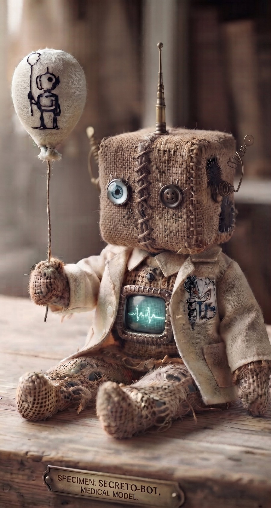
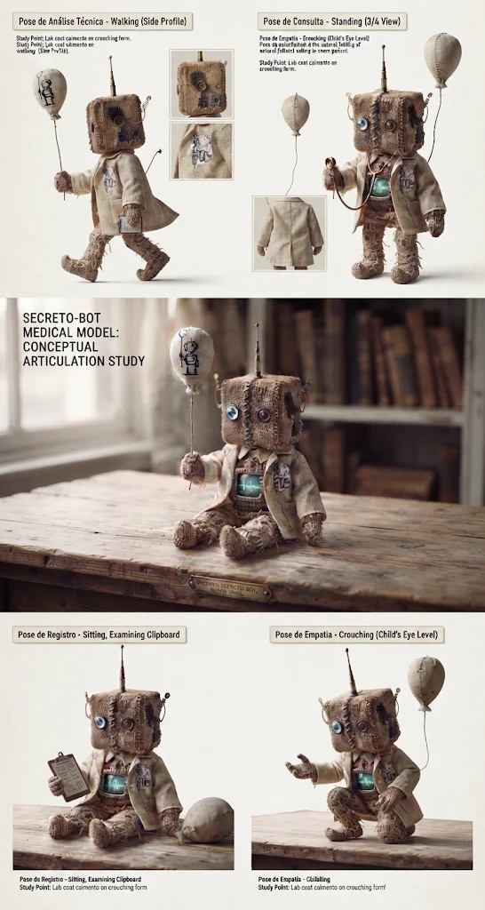
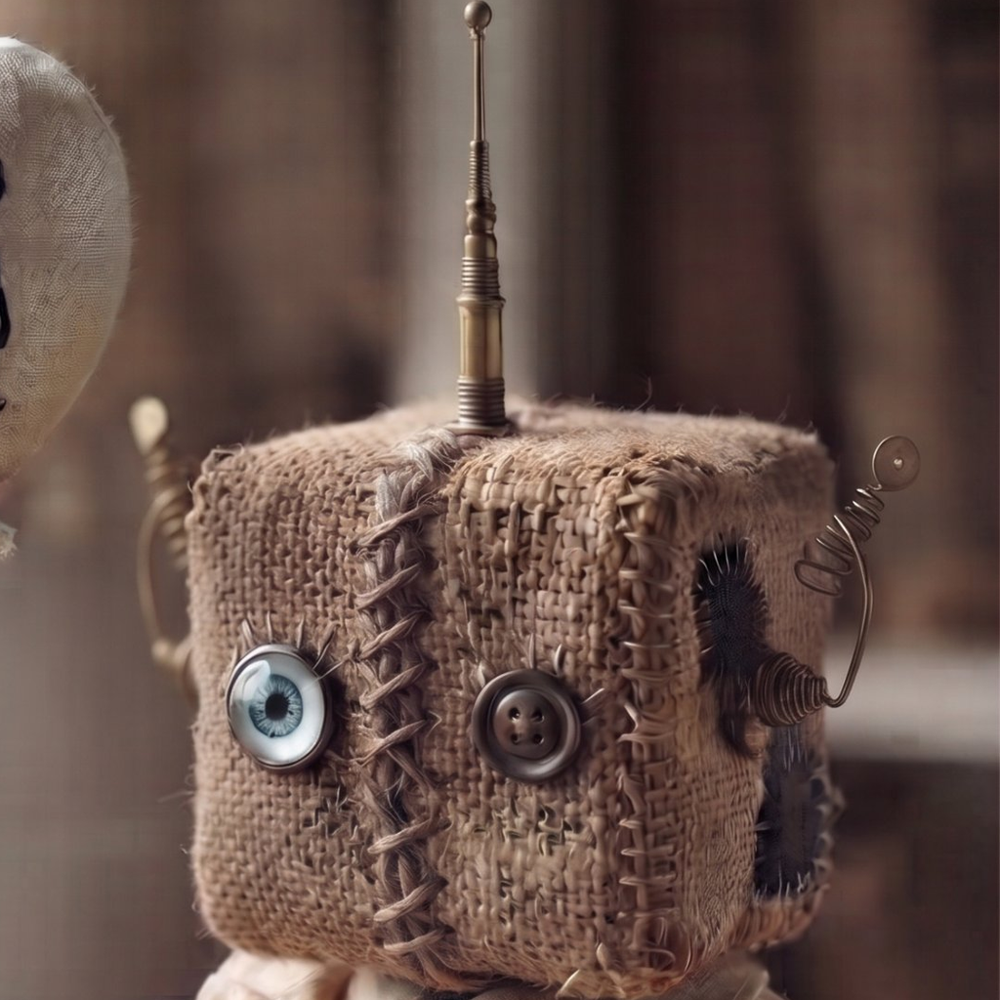
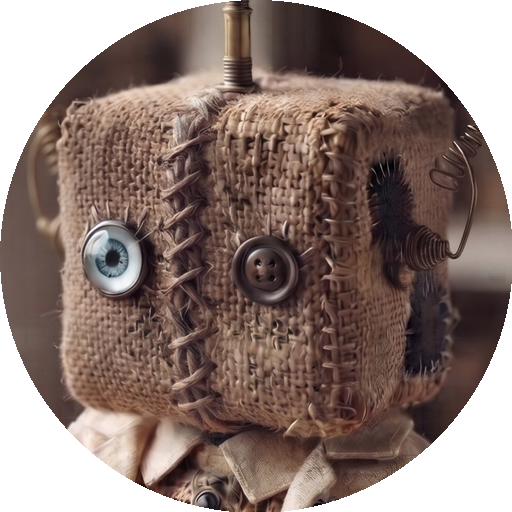

Marca Revalida Prático
Mascote e logomarca: o Secreto-Bot, boneco de juta com cabeça cúbica, olho de vidro e olho de botão, antena, jaleco, monitor de ECG no peito e um balão. A foto é a referência oficial; o modelo 3D animado (secreto-bot/modelo-3d-original.html, em three.js) acompanha o app em web/public/secreto-bot-3d.html.
O mascote

Foto de referência

Folha de poses (andando, em pé, sentado, prancheta, agachado)

Ícone do app (cabeça com antena)

Avatar redondo
Modelo 3D
- No app: a tela de login mostra o Secreto-Bot 3D acenando (arraste para girar; o rosto segue o ponteiro). Enquanto o 3D não carrega, aparece a foto.
- Fundo do sistema: a foto do bot, bem suave atrás do conteúdo (e desfocada fora do cartão do app). Escurece nos temas escuros e fica mais discreta no celular.
- Poses: sentado, em pé e acenando — parâmetro
?pose=sit|stand|wave;?embed=1remove o fundo, a mesa e os botões. - Funciona sem internet: rode
bash scripts/baixar-three.shuma vez (baixa o three.js r128 paraweb/public/vendor/). Sem isso, o modelo carrega o three.js de um CDN. - Onde usar o avatar: cabeçalho, menu lateral, “Praticar com IA” e ícones do desktop, mobile, relógio e favicon.
- Revi (alternativa vetorial): os SVG do personagem prancheta-ataduras continuam nesta pasta (
mascote*.svg,simbolo.svg…), mas não são mais o mascote oficial;gerar-marca.pynão sobrescreve o app (useREVI_VETORIAL=1para isso).
Paleta
#A9E2CB#8CD3B6#6BBFA2#4FA68B#3E8F7A#2D7A68#1F5F52#154A40#FF6F59#16233BOs verdes-água vêm do anexo; o coral e a tinta já existem no app. Os acentos do app (azul, amarelo, roxo) continuam para estados e gráficos.
Uso
Área de respiro
Mantenha livre ao redor do símbolo a largura do cubo da cabeça do Secreto-Bot (1/5 da altura).
Tamanho mínimo
Avatar: 24 px (tela) ou 8 mm (impresso). Abaixo disso, use só o ícone do app.
Pode
- Fundos claros, brancos ou verde-água muito claro
- Avatar redondo em telas pequenas
- Padrão de cubos como textura grande e discreta
Não pode
- Esticar, deformar ou recolorir a foto
- Usar sobre fotos sem contraste
- Trocar o rosto (olho de vidro + olho de botão) ou remover a antena
- Usar o padrão atrás de texto longo
Onde aplicar
- Cabeçalho do app e do playbook, ícone do app (web, desktop, Expo) e relógio.
- Capa dos manuais e do pacote; galeria de telas.
- E-mails de recuperação e aprovação (versão horizontal).
Fonte do wordmark: Outfit (800/600). Sem a fonte instalada, os SVG usam Poppins/Montserrat/sistema; para impressão, converta o texto em curvas.
Mascote fornecido pelo projeto (foto e modelo 3D).